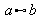

|
||
Topa ditzaket Math-en egitura guztiak hautapen-leihoan?
Hautapen-leihoan dagokien txantiloia ez duten zenbait egitura daude:
Eragile bitar osagarriak:
a oplus b |
|
a ominus b |
|
a otimes b |
|
a odot b |
|
a odivide b |
|
a wideslash b |
|
a widebslash b |
|
Gainera, %symbol erabiltzaileak definitutako ikurra bada, eragile unario edo bitar gisa erabil daiteke:
uoper %symbol a -k %symbol eragile unario gisa erabiltzen du.
a boper %symbol b -k %symbol eragile bitar gisa erabiltzen du.
Erlazio osagarriak:
a << b |
|
a >> b |
|
a def b |
|
a transl b |
 |
a transr b |
|
Eragile osagarriak:
liminf f |
lim inf f |
limsub f |
lim sub f |
Gainera, %symbol erabiltzaileak definitutako ikurra bada, eragile gisa erabil dezakezu:
oper %symbol a -k %symbol eragile gisa erabiltzen du.
Honi buruz gehiago irakurtzeko, ikus FAQ #006.
Parentesi osagarriak:
lfloor a rfloor |
|
lceil a rceil |
|
Parentesiek taldekatze-funtzioa dutenez, beti etorri behar dute bat eta beti habiaratu behar dira behar bezala. Parentesi eskalagarrietan, beharrezkoa da left eta right parentesiak bat etortzea, baina parentesiak askatasunaz konbina daitezke. Adibidea:
left ( a right [ sar dezakezu (a[ idazteko.
Parentesi indibidualei buruz gehiago irakurtzeko, ikus FAQ #001.
Ikur osagarriak:
backepsilon |
|
Funtzio osagarriak:
Math-ek ezagutzen dituen funtzioez gain, bestelako funtzioak idatz ditzakezu funtzioaren izenaren aurretik func jartzen baduzu; adibidez, func max. Honi buruz gehiago irakurtzeko, ikus FAQ #007.
Letra-tipo osagarriak aldatzeko komandoak:
nitalic a a zutik idazteko (ez etzana-ren laburdura).
nbold a a zabalera normalean idazteko (ez lodia-ren laburdura).
phantom a a ikusezina idazteko.
Kolore-komandoa azpiformularen kolorea aldatzeko erabiltzen da; ikus FAQ #011 xehetasun gehiago nahi izanez gero.
Math-eko sarrera-hizkuntzari buruzko erreferentzia osoa lantzen ari gara.
Itzuli Math-eko FAQei buruzko indize-orrialdera | Itzuli erabiltzaileen FAQei buruzko indize-orrialde nagusira
|
|
||